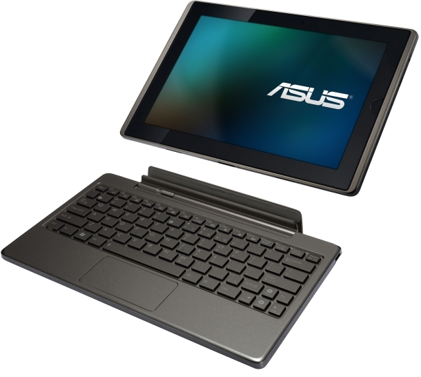
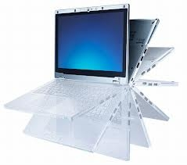
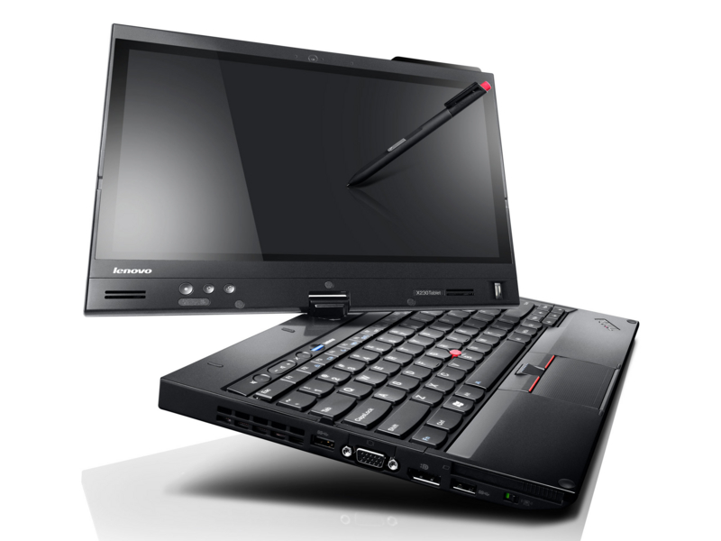
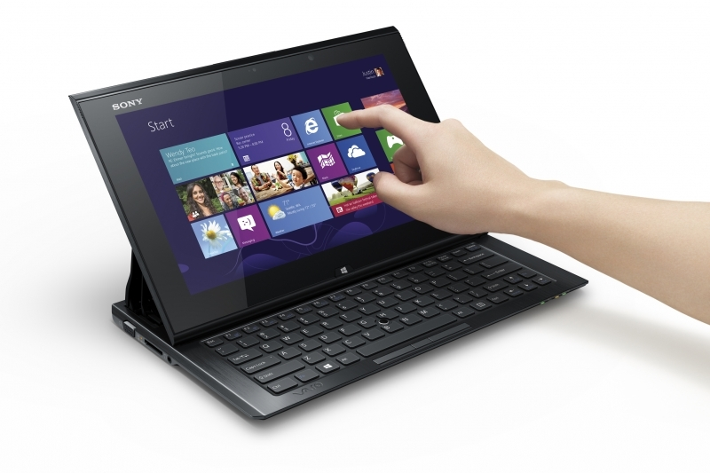
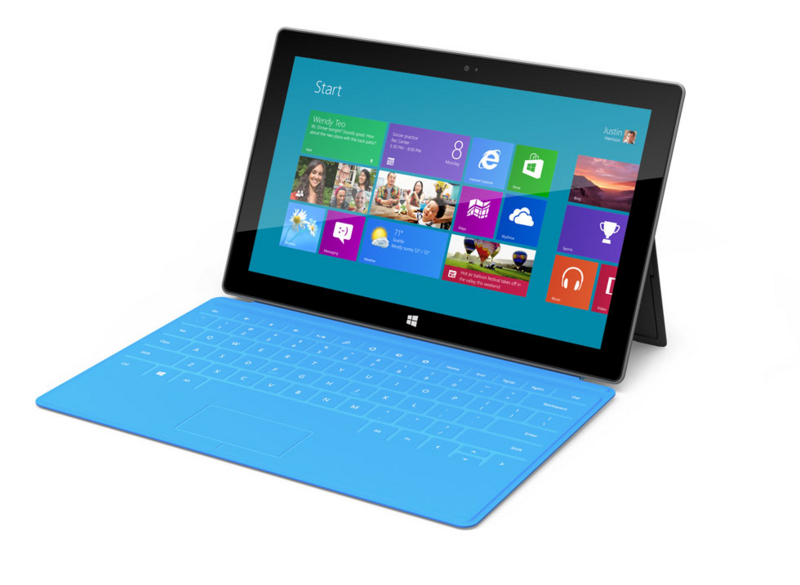

Windows 8 搭載機、なにを買う？
公開日：
Windows 8に向けてはソニーに限らず、複数のベンダーがハイブリッドPCに取り組んでいる。実のところ、ハイブリッドのデザイン候補は1つではない。大きく分けると次のような4つの候補があると考えられる。
【笠原一輝のユビキタス情報局】 素早く変形するだけじゃなくTDP限界も超える 〜ソニー「VAIO Duo 11」開発者インタビュー
VAIO Duo 11 の記事だけど、個人的にはこの部分に興味をもった。Windows 8 には二つのモードがある（と思われている*1）。既存のキーボード＆マウス（クラムシェル）と、新しいタッチインターフェイス（スレート）だ。なので、モバイル PC も二つのモードが利用できなくてはならない。
で、今考案されているのがこの4つの方式（＋いくつか）。
| 方式 | セパレート型 | 360度回転型 | 液晶部分回転型 | スライダー型 |
|---|---|---|---|---|
|  |  |  |  | |
| 利点 | タブレット部分のみを分離・携帯可能 | 回転機構がシンプル・全体的に軽量 | どのモードでも違和感のない操作性 | ワンアクションでのモード変換 |
| 欠点 | バランスをとるため、ベース部分が重くなる・全体の重量がかさむ | タブレットモードでキーボードが背面に | 回転機構が複雑・構造的に弱そう | スライド機構が複雑・パームレストが狭い |
| 採用機種 | ASUSTeK Transformer | Panasonic Let's note AX、Lenovo Yoga | Dell XPS Duo 11、ThinkPad X230T | VAIO Duo 11 |
やっぱりセパレート型？
冷静に考えて、このなかで一番合理的だと思うのは「セパレート型」だ。
たとえば“キーボードが必要な場合”とはなんだろう。まず、座れること。そして、大量にテキスト入力を行う必要があること。一方“スレートでいい場合”は、椅子が確保できそうにない、モビリティを何より優先したい、ゴロ寝で消費に徹する、といったケースが考えられる。
これはそう頻繁に切り替える必要のあるモノだろうか。落ち着いて座っていられる場合は、ベース部分から液晶部分を抜くことで、すぐさまスレートへ移行できる。座ることができない場合は、クラムシェルモードそのものを諦めなきゃいけない。そういう場合は、ベース部分など家においてきたほうがいい。
あと、ベース部分が重くなるという欠点も、そこにバッテリーを仕込んで長時間駆動が可能だと考えればメリットと考えられなくもない。たとえば VAIO Duo 11 は 5 時間駆動だそうだが、これでは一日もたせるのは厳しい。座布団タイプの拡張バッテリーが用意されるそうだが、それならセパレート型となんの違いがあるのだろう。
スライダー型をチョイスしたい
けれど、どれがほしいか？ と言われれば迷わず「スライダー型」だと答えられる。
このギミックには正直、心惹かれる。わざわざ変態的な機構を導入して勝負に出るところはさすがソニー。ソロバンを弾くまでもなく、脳と心臓が「これを買え！」と俺に呼びかける。たとえ、購入即爆死確定だとしてもだ。

そして忘れてはならない伏兵、Surface。そもそも日本で売ってくれるのかが謎だけど、これもぜひ選択肢に入れねばならん。Surface は美しく、かつ機能的だ。唯一の懸念は、新幹線の狭いテーブルではキーボードが使えなさそう、というただ一点のみ。絶対に触ってみたい！
でも、セパレート型にするのがやはり無難なのかもしれない。ASUSTeK ならリーズナブルだろうし……VAIO Duo 11、Surface と数万円の価格差ができれば……伊達や酔狂にカネを投じるには、わが給料ははなはだ心もとないのだ。
あぁ、マジで悩む……
*1:個人的には最近疑問に感じている